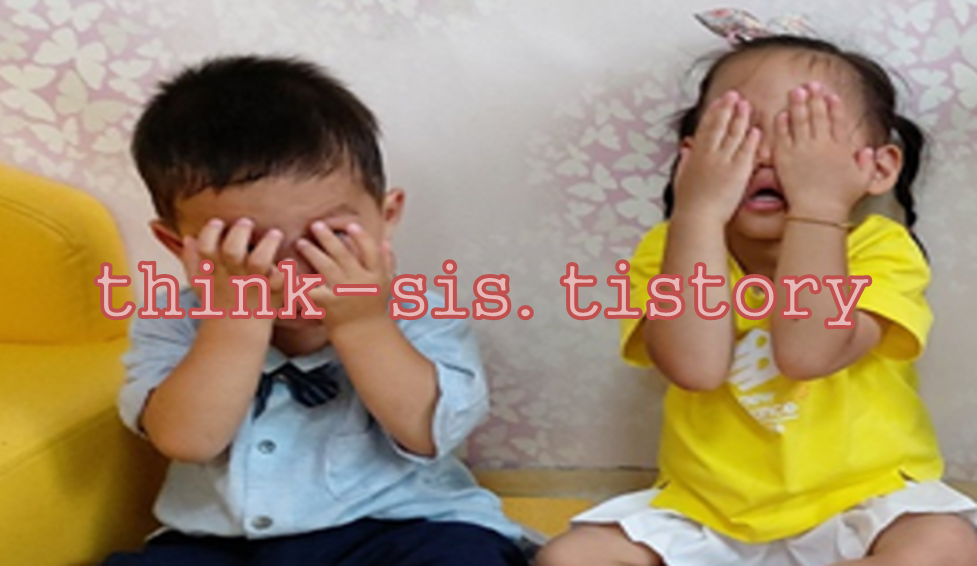

아이가 징징 울고 떼쓰는 경우는 내재된 자신의 불안한 감정을 나타내는 것이다. 이러한 아이들의 문제 행동에 대한 특징과 문제행동에 대한 지도방법은 다음과 같다.

1. 울기, 징징거리기 등과 "싫어, 안해" 라는 말
아이의 행동에서 울거나, 바닥에 뒹굴고 장난감을 던진다. 또한 자신의 머리를 흔들거나 쥐어뜯고 심하면 몸을 뒤로 젖히면서 울어대기도 한다. 유아기에 주로 나타나는 현상으로 징징거리기, 울기, 소리 지르기 등 다양하다. 때로는 음식을 토해내면서 떼쓰기도 하는 문제 행동은 통제력이 부족하여 충동성을 발휘하는 것이다. 또한 말끝마다 ‘싫어, 안해’ 라고 하는 경우, 뭐든지 내 것이라고 독차지하는 경우, 한 순간도 차분하게 머물지 않는 경우가 종종 있다는 점을 이해할 것이다.
2. 욕구 충족은 자의식의 발달에 의한 자기중심적 사고 발달 추구
아이는 발달과정에서 자의식이 발달하는 아이는 자기주장을 하기 위하여 울고, 떼쓰기, 공격성은 정상적인 행동이다. 2~3세부터 자율성이 발달하고, 4~5세부터 주도성이 발달하기 때문에 자기 뜻대로 하려는 특성을 나타낸다. 또한 18개월 이후부터 자의식이 형성되어 가면서 자기중심적 사고가 생겨 자신이 원하는 것을 습득하고자 강화시키는 행동으로 나타내는 것을 파악해야 할 것이다.
3. 아이 스스로 선택할 수 있는 허용적인 태도로 자기조절력을 향상시키기
아이에게 ‘안돼, 기다려’라는 단호함으로 해서는 안되는 것을 최소한으로 줄여야 한다. 아이가 발달 수준에 알맞게 수용할 수 있는 범위 내에서 스스로 선택하고 충동을 억제하는 자신의 행동을 통제할 수 있는 허용적인 태도를 취해야 한다. 이 시기의 아이는 자신의 생각을 말로 나타내는 것이 미흡하기 때문에 행동으로 자신이 하고 싶은 것을 나타낸 것이다. 아이가 자기중심적 사고의 증가로 이기적이면서 사회성 발달에 지장을 초래하지 않도록 주의해야 한다.
| 발달 시기에 따라 달라 나타내는 행동 1) 8개월경: 심한 울음으로 시작되는 떼의 단계 2) 14개월경 잘 걸을 수 있는 시기: 바닥에 엎드리거나, 심한 경우 바닥에 머리를 박는 형태 3) 24개월경 뛰어다닐 수 있는 시기: 떼쓰는 방법이 강해져 심하게 몸부림 치기 -배에 힘을 주어 토하거나, 잘 토해지지 않으면 손가락을 입에 넣어 일부러 토해냄 -양육자가 자기의 요구를 들어주지 않는 경우 숨을 멈추고 눈이 잠시 돌아감 |
4. 떼쓰고 징징거리는 문제행동 지도 방법
(1) 자기 통제력 증가로 안정감 추구해 주세요
자기통제력은 생후 18개월 이후부터 자의식이 발달한다. 아이는 자기중심적인 사고로 고집이 생겨 자신이 원하는 것을 습득하기 위함이다. 이 시기에 ‘안돼, 기다려’라는 단호함을 적극 나타내주어야 한다. 아이에게 안전을 위해 해서는 안되는 것을 구분하기와 아이가 스스로 선택 할 수 있도록 허용적인 태도를 취해 주어야 한다.
(2) 욕구충족과 일관성 있는 관심과 사랑을 표현해 주세요
양육자가 완벽적, 지배적인 양육자에게 감정을 나타냄으로써 아이가 양육자를 예민하게 반응하고 공격적인 행동을 나타내기 때문이다. 양육가자 아이의 호기심이나 자율성을 무리하게 제재한 경우 아이는 자신의 욕구가 충족되지 않아 고집을 나타낸 것이다. 또한 양육자의 일관성 없음에 혼란 및 불안에 대한 부정적인 감정을 나타낸 것이므로 조금만 더 관심을 기울이고 충분히 상호작용할 수 있다.
(3) 행동에 대한 한계를 설정하고 자기 조절력이 필요합니다
아이는 말로 자신의 욕구나 생각을 표현하기 어려운 경우가 대부분이므로 환경에 예민하거나 몸이 불편한 경우에는 짜증을 자주 나타낸다. 또한 양육자가 바빠서 관심이 부족할 경우, 형제가 많아서 양육자에게 관심을 끌기위한 경우에 짜증 및 화를 자주 나타내면서 양육자가 자신을 바라보도록 감정을 나타낸다. 이에 아이의 외로움, 불안, 서운함 등 부적 감정을 억누르고 충동적으로 나타내지 않는 자기조절력을 긍정적으로 발휘하도록 관심과 애정으로 도와주어야 한다.
(4) 감정을 가라 앉힐 수 있는 체계적인 행동조율을 해야 한다
아이가 발로 차고 뒹굴고 발길질하여 제어할 수 없을 정도로 심하게 떼를 쓰는 경우는 주변 물건을 파괴하거나 안전에 주의해야 한다. 이 때 아이의 손을 잡지 말고 3분 정도 아이 뒤에서 껴안아 주면 좋다(자동차 안전벨트 역할). 또는 아이를 들어서 안아주는 방법으로 흥분이 가라앉도록 기다려 주는 방법도 좋다. 아이가 극도로 심하게 때쓰기를 하는 경우는 양육자의 강점으로 맞불 작전을 하지 않으면서 아이가 안정감을 찾도록 자주 표현해 주면 효과적이다.
출처: 영유아생활지도 및 상담-박순길, 김동례, 선애순 공저(2021), 공동체
2022.02.06 - [분류 전체보기] - 분리 불안과 불안 심리의 차이 - 낯가림, 애착, 두려움과 공포
분리 불안과 불안 심리의 차이 - 낯가림, 애착, 두려움과 공포
분리불안과 불안의 의미 분리불안(separation anxiety)이란 발달과정과 일상생활의 적응 정도에 따라 아이들에게 흔히 나타나는 증세이다. 최초 어머니상(primary mother-figure)의 상실감에 따른 공포증은
think-sis.tistory.com